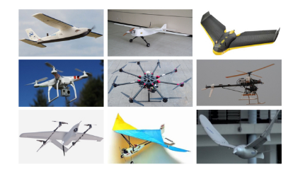
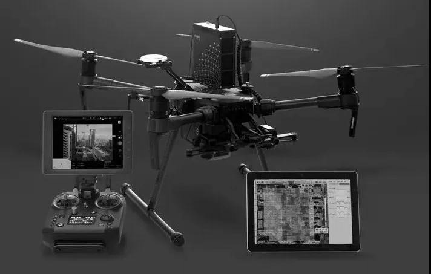
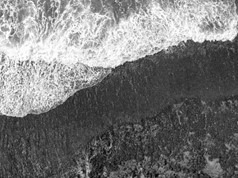
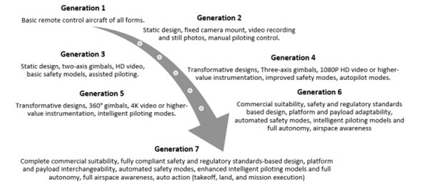

Drones, or unmanned aerial vehicles (UAVs), have been around since the early 1900s. Drones can range from the size of airplanes to the size of bumblebees (Figure [fig:airpollution]). Originally used for military operations, they became more widely used after about 2010 when electronic technology got smaller, cheaper and more efficient, prices on cameras and sensors dropped, and battery power improved . Where once scientists could only observe earth from above by using manned aircraft or satellites, today they are expanding, developing and refining their research thanks to drones .


Depending on their mission, drones are equipped with different payloads or equipment (Figure [fig:airpollution]). Digital cameras can identify plants and animals, and help create 3-D maps. Thermal cameras detect heat from living creatures like animals or stressed plants, as well as from water . Hyperspectral imaging identifies features of plants and water through measuring reflected light and can interpret a wider range of wavelengths than the human eye can see. LiDAR, which measures how long it takes for an emitted pulse of light to reach a target and return to the sensor, can be used to calculate the distance to an object and its height, which is used for 3-D maps . With this range of sensors, scientists and practitioners can choose from a range of options to expand their research.
We see great growth in mobile mapping research, that is “the acquisition of spatiotemporal phenomena by using a mobile multi-sensor platform” . This field of research includes remote sensing the acquisition of information about an object or phenomenon without making physical contact with the object, as well as various contact-based techniques for the acquisition of information in direct contact with the object.

Inspection and Data Gathering is an area of scientific study that is gradually adopting drones. For instance, the Sea Level and Coastal Changes group at MARUM (University of Bremen) studies coastal erosion, mangrove communities as well as the distribution of corals and the death of shallow corals. Prior to drones, the typical thing to do is to put a GPS on your backpack and walk along the beach to actually measure points on the beach. Coastal areas change rapidly for example, before and after a storm (Figure [fig:coastal]). Instead, The drones take many pictures at short intervals, and repeat flights at short intervals can show differences in conditions. A drone can cover the same area in less time and get much higher resolution pictures. This demonstrates that these tools are an ideal integration in a data gathering toolkits of researchers and practitioners. As a result, the industrial usage of drones is growing steadily.
All in all, applications for drones are crossing boundaries of science and industry, with everything from aerial photography to package delivery to disaster management benefiting from the technology. But before they become commonplace, there are challenges to be solved to make them reliable and safe.
Drones are usually flown with a controller on the ground, and some form of wireless communication (usually radio signals) between the operator and the drone . Since the remote pilot focuses on navigational aspects, it restricts the range of flights of a single operator. A challenge to drone flight is the amount of human involvement. looks at the capacity of the research team collecting data. Five provided information regarding the human involvement in their experiments; four of which are damage assessment. Pratt et al. (2008) included four members in their UAS operation crew: a pilot, a safety manager, a mission specialist and a tether manager. Kruijff et al. (2012) applied the same team structure as Pratt et al. (2008), less the tether manager. Murphy et al. (2008) discussed extensively the responsibility of each team member in a UAS flight and recommended a crew of three: a pilot, a mission specialist and a flight director.
In developing complex functionalities, the operator is focused on remote piloting, or on manning the ground station. In so doing, the operation requires further automation in order to give more flexibility to the operator, and in their amount of involvement.
A window of opportunity for the quality and application possibilities of industrial drones is the built-in sensor technology . Sometimes referred to as smart drones, additional monitoring systems can be installed between a drone’s flight control and smart sensors . Ideally, this allows for more efficient motors, better on board processors and software, more accurate sensors, as seen in Figure [fig:drone_gens], built-in safeguards, networked together to enable coordination, collaboration and real time data delivery, etc.

There are challenges to implementing smart sensors, which is the length and difficulty of the development process. For instance, collision avoidance is generally recognised as a complex process . This complexity can be attributed to the many different variables that factor in based on the applications in which this technology is used. Collision detection requires regular input of altitude, which is usually transmitted by an onboard range sensor. Additionally, with a view of obstacle, the drone can estimate. This is delegated to a camera or radio frequency sensor. Furthermore, algorithms would be required to monitor a obstacles relative to the moving drone, or detect if noise is an obstacle, which is solved with finer state estimation techniques .
In this thesis, I examine how smart systems benefit UAVs, and the tasks in which they operate. The problem I address is to understand the tradeoffs of certain smart systems over others in assisting UAV functionality.
What environments, and tools, can we put at disposition to accelerate the development of specialised functionalities using drone equipment? What functionalities are ideally developed in a research setting, as opposed to an industrial one? Are there any functionalities which require specific technological integrations? Should these functionalities be developed before flight, or during flight? This last distinction is the basis for two separate approaches: a dedicated test-and-demonstrate environment as opposed to a ground station.
The first approach explores the potential of distributed systems to assist task development upon UAVs.
In our first approach, we examine distributed systems, whereas multiple systems coordinate to assist, and simplify tasks during development and demonstration. This is a systemic approach that aims to interconnect the available systems. For instance, smart sensors can control a drone’s navigation path and monitor its flight. The operator’s interactions can be guided by computer vision systems along with object detection and collision avoidance programs. New forms of artificial intelligence or algorithms can make them even more adaptable. We explore the ways in which distributed systems can spare the practitioner from repetitive and time-consuming tasks.
The second approach explores the potential of onboard systems to assist the real-world deployment of UAVs.

In a second approach, we look more closely at the interplay between smart systems, and the real-world deployment of a UAV. We investigate how a drone’s design aids to gather multi-faceted data. Data acquisition systems offer an opportunity to manage the data collection process. Specialised navigation tasks offer other means of automating the data collection process. The drone operator can examine the data gathered in real time, and becomes involved as a data interpreter. We explore the ways in which onboard systems can aid with the practitioner’s task.
This thesis is associated with three major fields of work: swarm engineering, human drone interfaces and mobile sensing. These fields take inspiration from a variety of other fields. Figure [fig:research_domains] shows several domains that are explored in this thesis.

According to {% cite swarm_review %} , swarm robotics is an approach to collective robotics that takes inspiration from the self-organized behaviors of social animals. Through simple rules and local interactions, swarm robotics aims for robust, scalable and flexible collective behaviors for the coordination of large numbers of robots. In contrast, the term swarm engineering describes the design of predictable, controllable robot swarms with well-defined goals and the ability to function under certain conditions. Swarm engineering focuses mainly on concepts that could be relevant for real-world applications, therefore shifting swarm robotics to engineering applications.
{% cite tezza_andujar_2019 %} define Human-Drone Interaction (HDI) as a field of research that consists of understanding, designing and evaluating drone systems for use by humans, and in contact with humans. This field is similar to human-robot interaction (HRI), however, a drone’s unique characteristic to freely fly in a 3D space, and unprecedented shape makes human-drone interaction a research topic of its own. Researchers develop control modalities and better understand means of communicating with a drone.
We see great growth in mobile mapping research, that is “the acquisition of spatiotemporal phenomena by using a mobile multi-sensor platform” . The UAV is a platform that greatly simplifies research. One such field remote sensing, the acquisition of information about an object or phenomenon without making physical contact with the object . Recently, UAVs have enabled research towards contact sensing, for the acquisition of information in direct contact with the object , on a platform that serves for optimal sensor placement .
This list of contributions outlines each project in its respective field and an overview of the approach used to evaluate it.
A Multi-Robot Management Layer
We motivate a smarter ecosystem for task development upon drones by beginning with the infrastructure for new technologies and for prototyping functionalities. A centralised swarm framework serves to set up flight performance monitoring systems, a fundamental asset to the development of robots and multi-robot groups . A hover stability test is a good measure of system performance since it requires quick readjustments of the drone to counter natural disturbances during hovering. In , determine the performance of their flight controller by comparing the attitude of the drone in relation to the demanded null value of angular rotations. In this experiment, two drones are required to hover at an input setpoint with minimal error. The error over time is compared for the drones to better understand flight stability.
A High Level Interface
A high level interface is an abstraction layer for development activities. In order to simplify task development, and align with the thesis goals, we develop a framework for high level interaction between the operator and the functionalities of the testbed. A drone choreography is designed as a live demonstration of the Testbed’s functionality. The experiment data is accessible publicly .

A Gesture Controller for UAV Piloting
As of 2019, multiple gesture interfaces have been developed for UAVs {% cite liu_szirányi_2021 %} {% cite gesture_interface %} , but are lacking in drone piloting. Realtime interfaces for drone piloting are discouraged due to high latency and low control precision compared to other drone control modalities. As of , the literature utilizing the Crazyflie nanodrone does not include realtime streaming commands .
We put in place a demonstration for flight piloting in real-time using the developed gesture interface. We present the workflow of real-time gesture piloting pipeline and we evaluate it in terms of:
System response time
Accuracy of gesture recognition
Effective Gesture Recognition In order to evaluate gesture recognition performance, evaluates the false positive and negative rates of the pose detection by manually identifying both the incorrectly recognised gestures, and the unrecognised gestures. Similarly, we identify the false positive and negative rates of the pose detection.
A Pipeline with minimal Response Time The system response time was verified by applying a series of rapid maneuvers to register any significant delays between the pilot’s commands and their execution by the flight control system. choose to modify the drone’s angle in a specified direction. This choice is arbitrary and the changes in velocity are used in this case.The input was a demanded velocity in a specified direction. The input was changed randomly by the operator with hand movements. The output was a delay of the velocity change in the drone. Finally, a system response time is determined by averaging the response delays over the experiment.

A Mixed Reality Setup for Drone Development
The first objective of the simulated environment is to serve as a graphical interface in order to develop tasks otherwise too difficult to deploy. The priority of the virtual reality is therefore set on rendering capabilities, and the ability to obtain camera streams from this environment. We set up a virtual interface between real and virtual objects in real time. This MR simulation consists of a network interface between a robotics backend (ROS) and virtual environments (Unity3D). Similarly to , the pipeline is then evaluated in terms of communication latency for two separate scenarios.
when transmitting parameters into the simulated environment
when transmitting parameters to the robotics backend.
The latency of data transmission into the virtual setup
This latency is evaluated by determining the time-delay between the detection of drone poses from the robotics backend and the time they are received in the virtual setup. This approach is also taken in , who observe that on average a 400 ms time delay occurred in their MR simulation.
The latency of data transmission out of the virtual setup
This latency is evaluated by determining the time-delay between the detection of an event from the virtual setup, and the time that they cause a state change in the drone’s task manager. This approach deviates slightly from , who measure the moment the information is displayed on their graphical interface. Both approaches measure the response time before the event-data has its intended effect.
. 
Optimal Payload Shock Absorption for Optimised Payload Transport
We test the vibration sensitivity of the payload to remove any parasitic vibrations. We compare the shock absorption of two payloads subject to different amounts of damping material. This is done by developing a vibration profile as direct input from two accelerometers during drone flight and increasing the volume of damping material.

Monitoring Environment Conditions with a Drone Fieldscan Solution
We develop a drone solution for sampling environment conditions during a drone flight (Figure [fig:fieldscanpic]). Sunlit and shaded regions of an open field were scanned for relative humidity, luminosity and ambient temperature. The accuracy of the data setup was verified by examining the contrasts in atmospheric conditions between sunlit and shaded regions of an open field. The dataset and presentation video are available.

Detection of Footsteps with a Drone Vibration Solution
Structural inspections include seismic equipment upon UAVs , yet there lacks any mention of vibration probes on UAVs. We develop a drone prototype for acquiring vibration data after flying, landing, and recording under various scenarios (Figure [fig:footstep_setup]).
We test the validity of a drone vibration solution by using real-world human walking experiments on a concrete floor structure. This approach is also taken in (), who test an onboard UAV sensing module consisting of a series of geophones.

Determining the Sensitivity of the Drone Vibration Solution
We characterise the sensitivity of the drone probe solution with a sinusoidal sweep. A vibration shaker performs a sinusoidal sweep in a controlled setting.
Chapter [c1]:
In line with the thesis goal, we seek to better understand how distributed systems can offer smart assistance to multi-robot development. We explore research and techniques designed to coordinate multiple robots. We document the design of a development and demonstration testbed conform to existing research. We describe a procedural task-based architecture to complement an existing swarm stack. We demonstrate that the runtime environment is capable of coordinating multiple robots. A custom high level interface wraps the testbed towards more complex tasks, and it is demonstrated in a multi-drone choreography.
Chapter [c2]:
In line with the thesis goal, we look at two types of smart systems that enhance the interactions between humans and drones. The first allows the human to pilot a drone through a gesture interface. The second looks to a virtual interface as a training ground for a real drone to avoid a virtual object. A distributed system is used to to communicate and coordinate these pipelines by passing messages to one another from any system. To better understand their tradeoffs, the distributed systems are explored and evaluated in this chapter. We investigate a Mixed Reality Interface for the Testbed, as well as methods of drone Piloting using a Computer Vision algorithm. The utility of the framework is demonstrated by using it for two different tasks: quadrotor piloting using computer vision and collision-free flight of multiple UAVs. Building on existing frameworks like MediaPipe Hands, and Unity3D, we create perception pipelines for semi-autonomous flight, and we proceed to evaluate the response latency of these pipelines.
Chapter [c3]:
In line with the thesis goal, we pay attention to the interplay between smart systems, and the real-world deployment of a UAV. The carrier drone aids in streamlining the data collection process, by automating different fly-by procedures, safeguards, and scheduling the data collection. Two payloads are tested in outdoor flight, for atmospheric data and vibration data, and the sensors used in these tests are evaluated. In this way, onboard systems can aid with the practitioner’s task.
Applications are explored for UAVs as Mobile Sensing Platforms, with high-sampling and high-precision equipment. We design a carrier drone and Onboard Data Acquisition systems and we put them to practice along standards defined by industrial practitioners. Two payloads are tested in outdoor flight, for atmospheric data and vibration data, and we characterise the sensors used for these tests. A vibration probe is designed and our tests demonstrate its relevance in the field of mobile sensing.